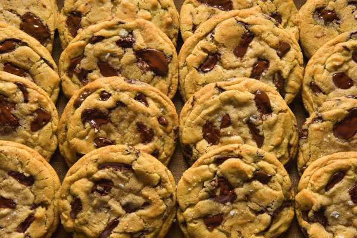

Chocolate Chip Cookies

The Chocolate Cookie of Chocolate Chip Cookies
That's right . . . the chocolate chipe cookie of all chocolate chip cookies. A chocolate chip cookie of which no other can possibly compete. Some would say this cookie could bring about world peace. Not just any chocolate chip cookie . . . THE chocolate chip cookie. Yes, it's that good!
Ingredients
- Flour 17 oz
- Baking soda 1 1/4 t
- Baking powder 1 1/2 t
- Sea salt 1 1/2 t
- Unsalted butter 2 1/2 sticks
- Brown sugar 10 oz
- Raw sugar 8 oz
- Eggs 2
- Vannila extract 2 t
- Chocolate chips 1 1/4 lb
Steps
- Combine flour, baking soda, baking powder, and salt.
- Mix butter and sugars for 5 minutes.
- Add eggs one at a time.
- Stir in vanilla.
- Add dry ingredients and mix until just combined.
- Add chocolate chips.
- Preheat oven to 350 degrees.
- Using an ice cream scoop, place cookies on baking sheet at least 2 in apart.
- Sprinkle with sea salt.
- Bake until golden.
- Enjoy!